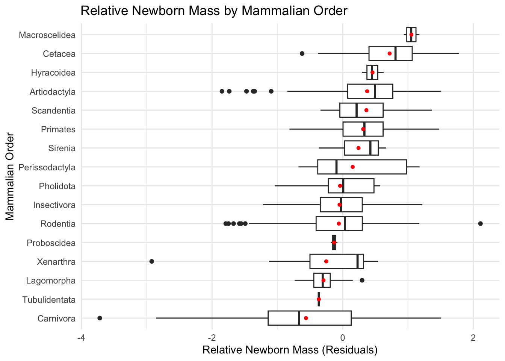
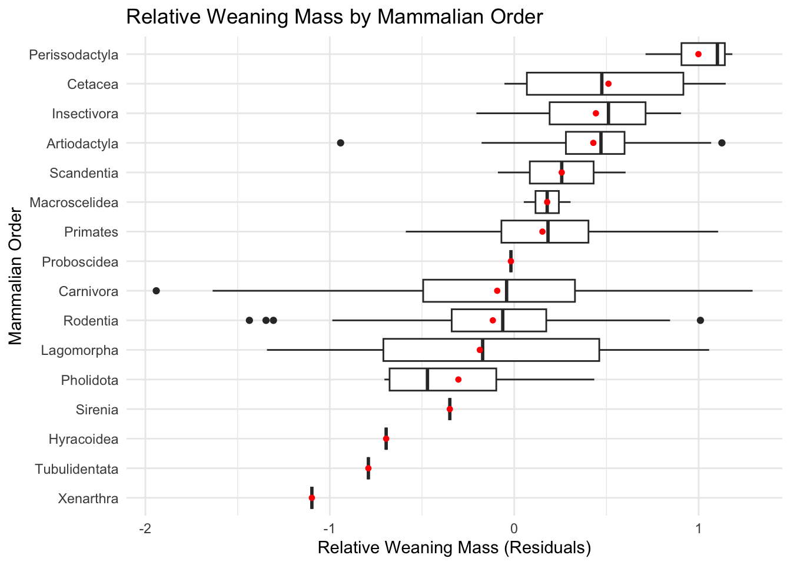

Set up a new GitHub repo in your GitHub workspace named “exercise-11” and clone that down to your computer as a new RStudio project. The instructions outlined as Method 1 in Module 6 will be helpful.
Using the {tidyverse} read_tsv() function, load the “Mammal_lifehistories_v2.txt” dataset from this URL as a “tibble” named d. As discussed in class, this is dataset that compiles life history and other variables for over 1400 species of placental mammals from 17 different Orders.
Do a bit of exploratory data analysis with this dataset, e.g., using the {skimr} package. Which of the variables are categorical and which are numeric?
Order, family, Genus, species are character; the rest 10 columns in numeric variables;
library(tidyverse)
Warning: package 'ggplot2' was built under R version 4.3.3
Warning: package 'purrr' was built under R version 4.3.3
Warning: package 'lubridate' was built under R version 4.3.3
── Attaching core tidyverse packages ──────────────────────── tidyverse 2.0.0 ──
✔ dplyr 1.1.4 ✔ readr 2.1.5
✔ forcats 1.0.0 ✔ stringr 1.5.1
✔ ggplot2 3.5.2 ✔ tibble 3.2.1
✔ lubridate 1.9.4 ✔ tidyr 1.3.1
✔ purrr 1.0.4
── Conflicts ────────────────────────────────────────── tidyverse_conflicts() ──
✖ dplyr::filter() masks stats::filter()
✖ dplyr::lag() masks stats::lag()
ℹ Use the conflicted package (<http://conflicted.r-lib.org/>) to force all conflicts to become errors
Rows: 1440 Columns: 14
── Column specification ────────────────────────────────────────────────────────
Delimiter: "\t"
chr (4): order, family, Genus, species
dbl (9): mass(g), gestation(mo), newborn(g), weaning(mo), wean mass(g), AFR(...
num (1): refs
ℹ Use `spec()` to retrieve the full column specification for this data.
ℹ Specify the column types or set `show_col_types = FALSE` to quiet this message.
in histogram where distribution of the values are different compared to non-log values;
Step 4
Regress the (now log transformed) age [gestation(mo), weaning(mo), AFR(mo) (i.e., age at first reproduction), and max. life(mo) (i.e., maximum lifespan)] and mass [newborn(g) and wean mass(g)] variables on (now log transformed) overall body mass(g) and add the residuals to the dataframe as new variables [relGest, relWean, relAFR, relLife, relNewbornMass, and relWeaningMass].
HINT: Use “na.action=na.exclude” in yourlm() calls. With this argument set, the residuals will be padded to the correct length by inserting NAs for cases with missing data.
Plot residuals of max lifespan (relLife) in relation to Order. Which mammalian orders have the highest residual lifespan?
Plot residuals of newborn mass (relNewbornMass) in relation to Order. Which mammalian orders have the have highest residual newborn mass?
Plot residuals of weaning mass (relWeaningMass) in relation to Order. Which mammalian orders have the have highest residual weaning mass?
NOTE: There will be lots of missing data for the latter two variables!
library(tidyr)library(ggplot2)d_drop <-drop_na(d, relLife, order)ggplot(d_drop, aes( x = relLife, y =reorder(order, relLife, FUN = mean))) +geom_boxplot() +stat_summary(fun = mean, geom ="point", shape =20, color ="red", size =2)+labs(x ="Relative Max Lifespan (Residuals)", y ="Mammalian Order", title ="Relative Lifespan by Mammalian Order") +theme_minimal()
d_nb <-drop_na(d, relNewbornMass, order)ggplot(d_nb, aes( x = relNewbornMass, y =reorder(order, relNewbornMass, FUN = mean))) +geom_boxplot() +stat_summary(fun = mean, geom ="point", shape =20, color ="red", size =2)+labs(x ="Relative Newborn Mass (Residuals)", y ="Mammalian Order", title ="Relative Newborn Mass by Mammalian Order") +theme_minimal()

Macroscelidea, cetacea orders have the highest residual newborn mass!
d_wn <-drop_na(d, relWeaningMass, order)ggplot(d_wn, aes( x = relWeaningMass, y =reorder(order, relWeaningMass, FUN = mean))) +geom_boxplot() +stat_summary(fun = mean, geom ="point", shape =20, color ="red", size =2)+labs(x ="Relative Weaning Mass (Residuals)", y ="Mammalian Order", title ="Relative Weaning Mass by Mammalian Order") +theme_minimal()

Perissodactyla order has the highest residual weaning mass!
Step 6
Run models and a model selection process to evaluate what (now log transformed) variables best predict each of the two response variables, max. life(mo) and AFR(mo), from the set of the following predictors: gestation(mo), newborn(g), weaning(mo), wean mass(g), litters/year, and overall body mass(g).
HINT: Before running models, winnow your dataset to drop rows that are missing the respective response variable or any of the predictors, e.g., by using drop_na().
For each of the two response variables, indicate what is the best model overall based on AICc and how many models have a delta AICc of 4 or less?
What variables, if any, appear in all of this set of “top” models?
Calculate and plot the model-averaged coefficients and their CIs across this set of top models.